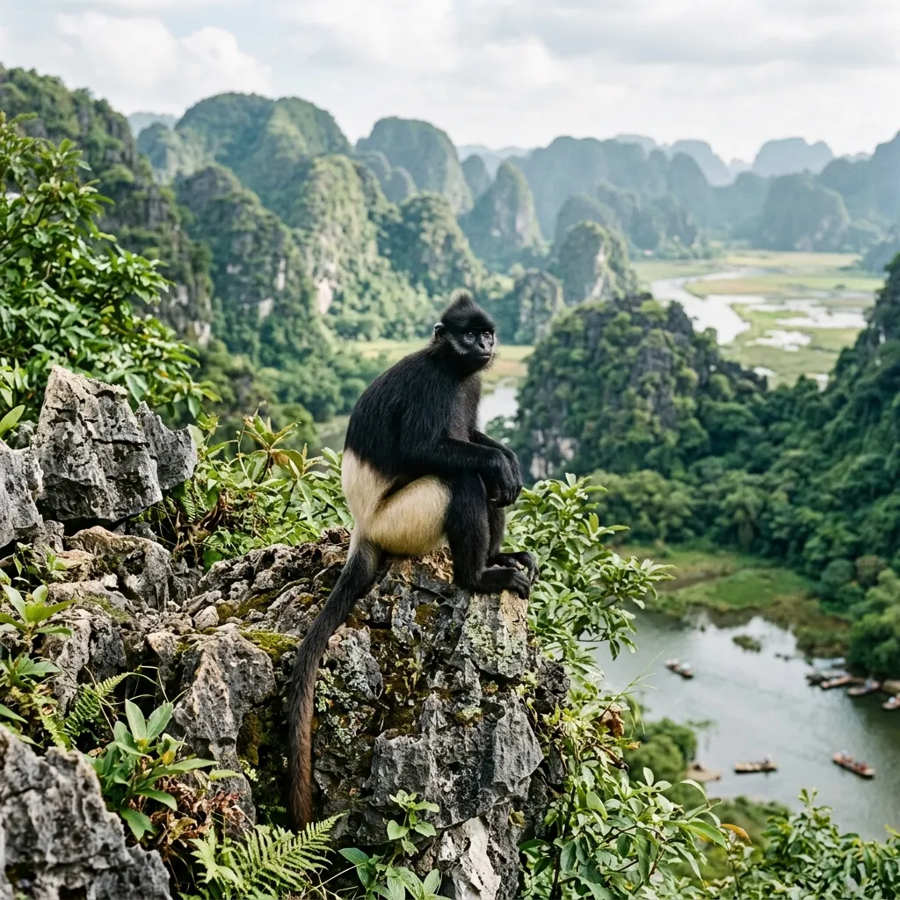

📋 Tổng quan đầm Vân Long
Đầm Vân Long là khu bảo tồn thiên nhiên đất ngập nước lớn nhất vùng đồng bằng Bắc Bộ. Nơi đây sở hữu cảnh sắc tĩnh lặng nguyên sơ đến nao lòng, được du khách ưu ái gọi tên là "vịnh không sóng". Nước đầm trong vắt soi rõ từng lớp rong rêu, phẳng lặng như một tấm gương khổng lồ phản chiếu các khối đá vôi karst sừng sững dựng đứng.
Đầm Vân Long không chỉ là khu danh thắng thông thường mà còn giữ giá trị sinh thái đặc biệt. Đây là nơi cư ngụ của quần thể Voọc mông trắng lớn nhất Việt Nam (loài linh trưởng cực kỳ quý hiếm có tên trong Sách Đỏ thế giới) và là bến đỗ bình yên của hàng vạn loài chim nước di cư mỗi độ thu về.
📸 Tọa độ trải nghiệm sinh thái nổi bật
Cảm nhận nét hoang sơ thanh tịnh của đầm Vân Long qua 4 tọa độ không thể bỏ lỡ:
Kỷ lục Việt Nam
Bức tranh "Vịnh không sóng"
Mặt nước phẳng lặng như gương đạt kỷ lục "Bức tranh tự nhiên lớn nhất Việt Nam", phản chiếu các vách núi đá vôi uốn lượn tráng lệ.

Kỷ lục Việt Nam
Voọc mông trắng leo núi
Vân Long đạt kỷ lục quốc gia là nơi có số lượng cá thể Voọc mông trắng nhiều nhất Việt Nam, dễ dàng quan sát chúng tự do leo trèo trên vách đá hoang dã.
Trải nghiệm chiều
Mùa cò trắng bay về tổ
Khoảnh khắc hàng vạn cánh cò trắng muốt chao liệng giữa bầu trời hoàng hôn nhuộm đỏ, tụ hội về những vách đá trú ẩn rêu phong.
Hang động
Xuyên lòng Hang Cá ngầm
Hang động xuyên thủy độc đáo ngập nước dài hơn 250m luồn sâu dưới lòng núi đá, mở ra những khoảng không ngắm cảnh mát lạnh kỳ ảo.
Cảnh quan kì vĩ
Kẽm Trăm Đầm Vân Long
Đoạn ngắt sông hẹp chảy luồn lách giữa hai vách núi đá dựng đứng tựa như một khe núi đá khổng lồ chắn ngang đầm, tạo nên bức tranh thiên nhiên tuyệt mỹ.
Di tích lịch sử
Động Hoa Lư (Thung Lau)
Thung lũng lịch sử nằm gần đầm, nơi Đinh Bộ Lĩnh thời niên thiếu cùng chúng bạn chăn trâu tập trận cờ lau và xây dựng căn cứ đầu tiên thời loạn 12 sứ quân.
Tâm linh thanh tịnh
Chùa cổ Thanh Sơn tự
Ngôi chùa cổ tựa lưng vào vách núi đá vôi dốc đứng, mặt hướng ra vùng ngập nước mênh mông của Vân Long, mang vẻ thanh tịnh yên bình đến lạ kỳ.